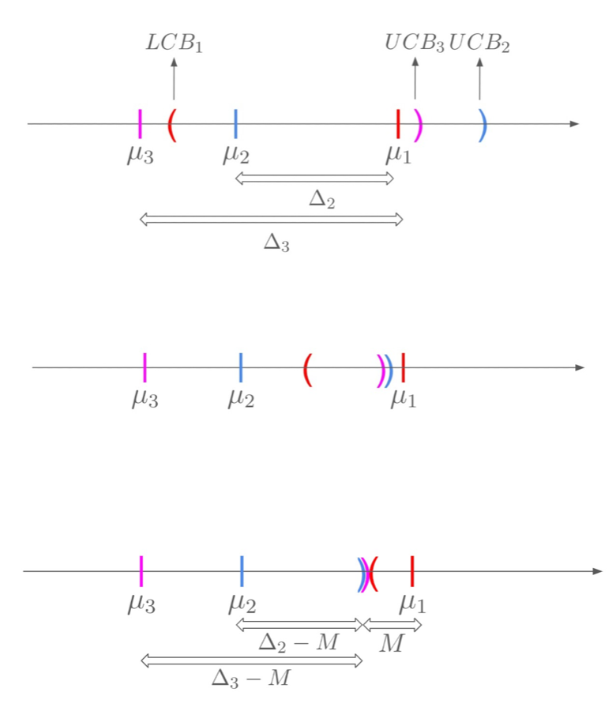
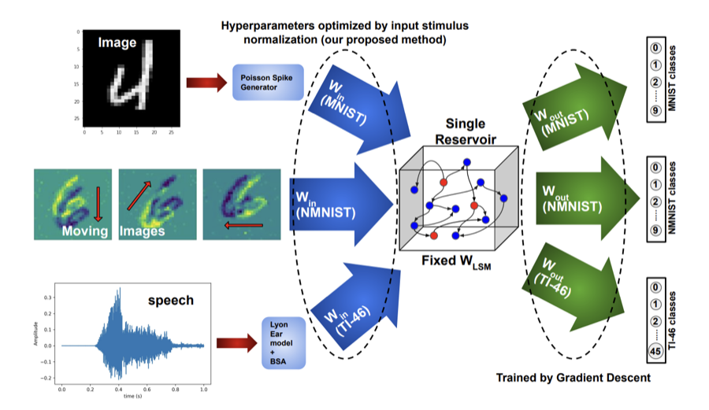
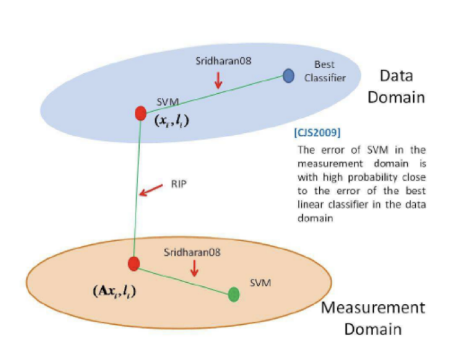

Research

On the Asymptotic Optimality of Confidence-Interval-Based Algorithms for Fixed-Confidence MABs
Studies best-arm identification in multi-armed bandits with as few samples as possible. We propose LUCB-Greedy, a simpler algorithm that is ~30% faster than baselines while remaining asymptotically optimal.

MAdapter: A Multimodal Adapter for Liquid State Machines configures the Input Layer for the same Reservoir to enable Vision and Speech Classification
A multimodal input adapter that lets a single liquid-state-machine reservoir handle both vision and speech classification.

Compressive Image Classification using Deterministic Sensing Matrices
Studies classifying images directly from compressive measurements taken with deterministic sensing matrices instead of random ones. An SVM trained on the compressed measurements comes close to the accuracy of one trained on the full images at about 7× compression.